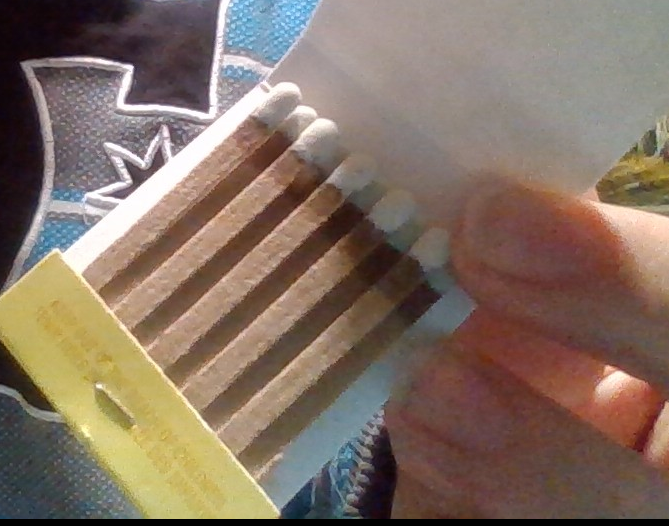

KNO3 is very hard to work with and isnt very household for alot of people
takes up alot of matches and may be more expensive than KNO3, it also produces less thrust and is impractical
you will need: 1 pack of matches, sugar(make sure its a 2 match 1 sugar ratio
buy the cheapest matches as expensive ones wont make any diffrence
break off the heads of the matches and grind them to a powder(optional), the finer the powder, the better it will burn
one pack of my matches contains1 gram of powder so i will be mixing in only a sprinkle of sugar on (the sugar is only to help the matches light off with more force)
now light it up and whatch it go off with a WOOOOOSH (do it outside because it lets out an insane amount of smoke)